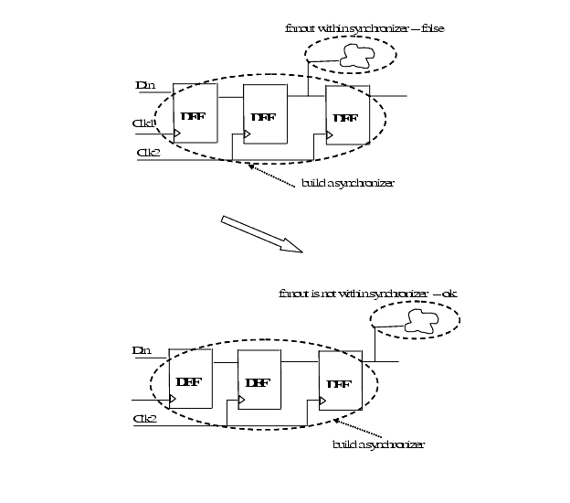

Description
This rule fires when Leda detects fanout within synchronizer. When data transfers between mixed clock domains, Leda recommends that data should be clocked at least twice by the later clock. This structure is termed as a synchronizer.You can use the rule_set_parameter Tcl command and the SYNCHRONIZER_FF_NUMBER parameter to configure the required number of synchronizing flip-flops. The default value is 2. For example:
leda> rule_set_parameter -rule NTL_STR86 \
-parameter SYNCHRONIZER_FF_NUMBER -value {3}
Policy
DESIGN
Ruleset
STRUCTURE
Language
VHDL/Verilog
Type
Hardware
Severity
Error
This is an example of a invalid, valid Verilog code, followed by a circuit diagram that illustrates the problem:
module ntl_str86_top ; ...
wire Clk1, Clk2; //clock signal
reg Q_FF1, Q_FF2, Q_FF3; //output of Flip-Flop
always @(posedge Clk1) //Flip-Flop FF1 in clock domain 'Clk1'
Q_FF1 <= Din;
always @(posedge Clk2) //Flip-Flop FF2 in clock domain 'Clk2'
Q_FF2 <=Q_FF1;
always @(posedge Clk2) //Flip-Flop FF2 in clock domain 'Clk2'
Q_FF3 <= Q_FF2;
// three Flip-Flops: FF1 -> FF2 -> FF3 build the synchronizer
assign net1 = Q_FF2 & net0; //violation, this fanout is within this
//synchronizer
endmodule
//Valid Design file
module ntl_str86_top ;
wire Clk1, Clk2; //clock signal
reg Q_FF1, Q_FF2, Q_FF3; //output of Flip-Flop
always @(posedge Clk1) //Flip-Flop FF1 in clock domain 'Clk1'
Q_FF1 <= Din;
always @(posedge Clk2) //Flip-Flop FF2 in clock domain 'Clk2'
Q_FF2 <=Q_FF1;
always @(posedge Clk2) //Flip-Flop FF2 in clock domain 'Clk2'
Q_FF3 <= Q_FF2;
// three Flip-Flops: FF1 -> FF2 -> FF3 build the synchronizer
assign net1 = Q_FF3 & net0; //ok, this fanout is not within this
//synchronizer
endmodule
